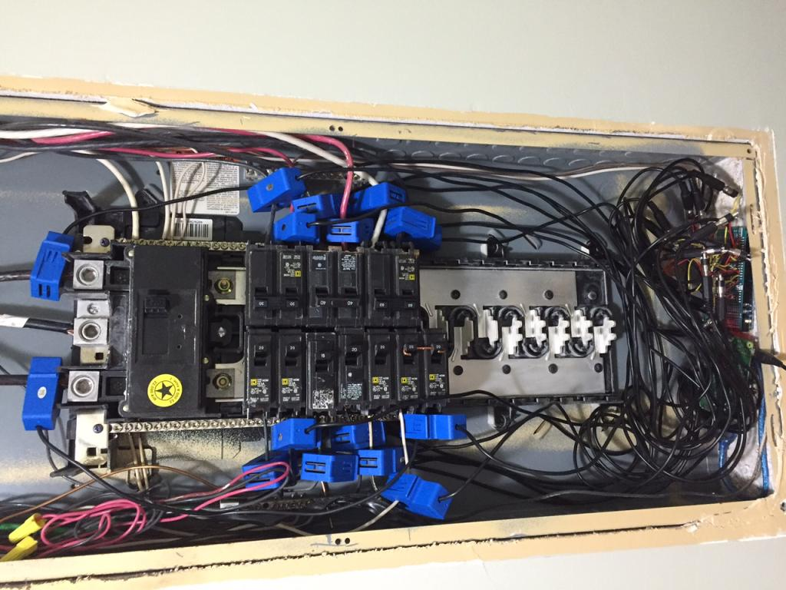
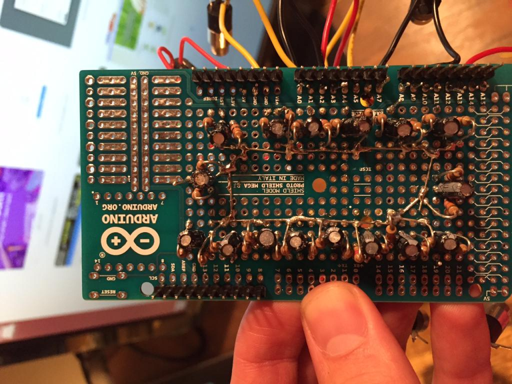
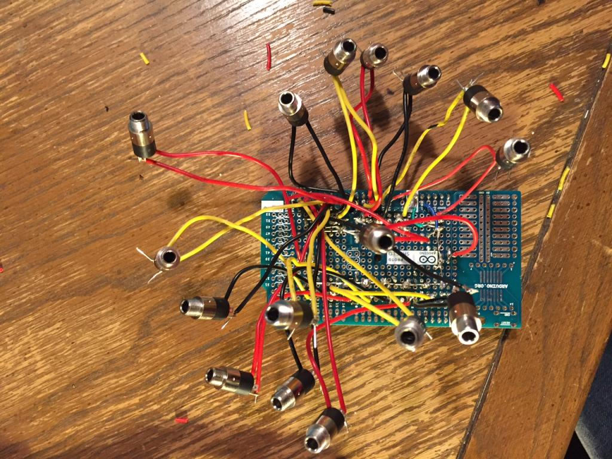

Hello fellow OEMers,
One limitation of the emonTx is the number of inputs: four. However, I believe that an excellent application of the concept and software is monitoring each circuit in the breaker box (US application in my case). To accomplish this, I prototyped a custom shield for an Arduino Mega, which as 16 analog inputs over the Uno's 6. Another feature is that the Arduinos communicate with and get power from the Pi over USB, eliminating the need for RF modules and all but one power cable. I am sure many have done this before, but I thought I'd document my journey for the curious and get feedback as I improve the prototype. Developing a product/service for sale to residences, businesses, and industry is something I'm interested in.

Communicating over USB - the config file on the emonHub must be adapted. An interfacer must be added for each Arduino used, and the com_port must be changed to \dev\ttyUSB0 for the first, -USB1 for the second, etc. Depending on the Arduino, USB may need to be changed to ACM. (Google can help you figure out which one is correct.) The emonTxShield sketch must be modified to serialprint each current/power separated by a space. There are some nuances that I haven't covered, see attached for my setup notes and a copy of my adaptations to the emonHub config and emonTxShield sketch.
Prototype Shield - This is ugly and I'm trying to find someone to make a SMT printed shield that is more reliable and less labor-intensive. I just put 16 of the current-only measurement circuits in the building blocks on a protoshield (minus the burden resistor - I used CTs with an internal burden).
 
Known bugs - calibration is suspected to be off, possibly due to poor assembly of shield. Would like to imitate emonShieldTx as much as possible because it works so well. Also, the system will go inactive sometimes for unknown reasons and must be restarted - if the cause cannot be identified and fixed it would be nice to have a flatline data email alert and remote reboot of the Pi.
Here's a dashboard of my panelbox with a few multigraphs if anyone is interested. Many thanks to the community here for the vast archive of knowledge. I am just a young buck with much to learn in the huge and complex world of energy monitoring. It's very exciting and I look forward to feedback and giving back to the community.
Jake
Edit - embedded pics
Re: Arduino Mega OEM System - up to 48 CTs
My first observation is you could save an awful lot of resistors and capacitors if you derived the "mid-rail" for all the inputs from the output of a single op.amp. The side effect of that is you can, if you wish, have the software filter in only one channel, because all share the same offset voltage. That'll reduce your processor load a little, and speed up calculation (a little!). That implies a change to the library - all you need to do is share the offset voltage - you could do that rather neatly with a flag passed in to the calcIrms method.
Not measuring the voltage means that you can only have an estimate of apparent power, not a measurement of real power. That reduces the accuracy of your measurements, and means that your rig is no better than the many commercial offerings that only estimate power and energy based on the same principle: a measurement of current and a nominal voltage.
If you're having PCBs made, I'd make provision to fit burden resistors. Even if you don't envisage using them, it leaves your options open, and will cost nothing now. Later, it could cost a redesign and a new batch of boards.
Re: Arduino Mega OEM System - up to 48 CTs
Nice to see interfacers being tailored for other uses, although the EmonHubJeeInterfacer is heavily weighted towards the rfm2pi, emonpi, JeeLink and JeeNodes etc.
A EmonHubSerialInterfacer type maybe better suited as all the rf stuff isn't there and the default datacode is already "0"
[[Serial1]]
Type = EmonHubSerialInterfacer
[[[init_settings]]]
com_port = /dev/ttyUSB0
com_baud = 9600
[[[runtimesettings]]]
pubchannels = ToEmonCMS
subchannels = ToRFM12
Should be all you need (for each device) the usa, quiet, baseid, freq and group will not be recognized by any any sketches other than the rfm2pi or emonpi, unless you write that functionality into the sketch you are using.
Removing all the attempts to set the settings that are not there will lighten the processor load marginally and tidy up the log files. so not essential, but worth mentioning.
Paul
Re: Arduino Mega OEM System - up to 48 CTs
Robert, thank you for the common mid-rail suggestion. That seems like it would clean up the shield considerably. Why does the emonTxShield not use such a method, is it for simplicity since it has only four current inputs?
Also, I realize not measuring voltage leads to inaccuracies when reactive loads are introduced. However, AFAIK, there is no commercial offering even for this many CTs at a comparable price point, unless someone here knows of one? Regardless, it would be cool if one of the analog pins could be selected by a jumper or something to be connected to either current or voltage input - I will try to include that in the PCB design.
Additionally, I'd like to build in a burden resistor like the emonTxShield that the user can remove and/or replace. A relative of mine has access to some electronics wholesaler where he can purchase an SCT-013-000 for less than $1USD, so I would like to go that route with future installations. I hope the oem shop has access to a deal like that!
Paul, thank you for the serial interfacer suggestion. I tried to use it based on a previous suggestion of yours in this forum but for some reason couldn't get it to work. Probably I just had some of the settings wrong and finally got it right with the Jee interfacer and called it good. I will do some testing with the parameters you provided.
Re: Arduino Mega OEM System - up to 48 CTs
"Why does the emonTxShield not use such a method, [Op.amp bias]"
It's probably for historical reasons. The emonTx came first and that can be powered by batteries, in which case, the current draw of an op.amp. would reduce battery life significantly. This is also the reason for the very high value of resistor in the bias chain. The Shield came later. Of course, though current is not a concern, there probably isn't much cost difference and so why change the tried and tested design?
"not measuring voltage leads to inaccuracies" unless your supply voltage is rock solid too!
I was thinking in terms of the Magnelab CTs and a burden resistor in case you want to use a channel or two on the main incomer. You realise that you need to order the special output voltage if you get those with the internal burden, or derate them if you don't? (Details are in the North America article in Building Blocks.)
Re: Arduino Mega OEM System - up to 48 CTs
Makes sense. I too am wary of changing the tried and tested design, plus have lower familiarity with opamps at the moment. Could be a real game changer though, I'll do some research and experimenting...
Using the larger Magnelabs could be a necessity in future projects, however the main incomers for my small apartment fit inside YHDC CTs and I think the incomers at my parent's house will also. How common is it for incomers to be too large for YHDC?
It is a good reminder that CTs must have 0-1V output for compatibility with emonLib. Hopefully I won't have to use Magnelab often since their CTs are way more expensive!
Re: Arduino Mega OEM System - up to 48 CTs
However, AFAIK, there is no commercial offering even for this many CTs at a comparable price point
Hi Jacob,
Have you looked at the Brutech GEM?
Re: Arduino Mega OEM System - up to 48 CTs
Hi Bill, I had not! That is very competitive... Perhaps I should focus my efforts on configuring and implementing that instead. That is a pretty cool system. I wonder if you have to use their CTs or if you can provide your own... they charge ~$30USD.
Re: Arduino Mega OEM System - up to 48 CTs
I wonder if you have to use their CTs or if you can provide your own... they charge ~$30USD.
The GEM can use 333mV CTs as well as the mA type. mV CTs are quite common, and available from multiple sources. Depending on the size of the feeders, you may or may not need CTs with large openings. There are links to CT sources in the EmonTx - Use in North America article in the Building Blocks section of the site.
For branch circuits, Brultech's solid-core CTs cost considerably less.
Spec sheet here
Re: Arduino Mega OEM System - up to 48 CTs
True. Now that I think about it though, I bet it could be done for less even than the GEM (Greeneye Monitor): they charge $300 to $400 for the monitor, another $100+ for 32 solid core CTs, and $270 for their recommended-but-not-necessary data logger/gateway (DashBox). Total $700ish.
With a setup similar to mine, the same task could be accomplished with a $50 Pi (with SD card & WiFi), two Arduino Megas for $15 each, and hopefully this custom PCB shield can be less than $30 or $40 each? So that's less than $200, but the CT cost is a wild card. If my relative truly can get them for $1 then that would mean a $250 kit, but if the eBay price of $6 must be used then that means a $400 kit.
It seems best to me to stick with split core for ease of installation and avoiding disruption of service in commercial/industrial applications unless there really is a 4x cost difference like the GEM store charges.
Re: Arduino Mega OEM System - up to 48 CTs
I figured you'd skip the data-logger, since the unit has an RS-232 output. A python script is available that enables sending the data to 3rd party monitoring software.
One thing comes to mind though. You mentioned commercial/industrial use. Have you checked into what it would cost to get a product tested/certified for use in those environments? You'll probably find most business and especially industrial, users will be looking for that because of insurance reasons.
Food for thought.
Re: Arduino Mega OEM System - up to 48 CTs
I've been in touch with a PCB design/manufacture firm to develop a shield for the Arduino Mega, and they asked for a "functional and operational requirements" document. The attached .pdf will be sent to them soon. If you'd like to take a look and give some feedback, it would be much appreciated. Thanks!
Re: Arduino Mega OEM System - up to 48 CTs
Hi Jake,
I have a something similar, except I'm just using multiple EmonTx's (likewise, I couldn't find anything cheaper, and I liked the OEM ecosystem - and you weren't selling yours yet!). The usual YDHC CTs went round my 100 amp supply lines - just. The only thing I changed was in EmonCms - the multigraphs of usage on all the circuits didn't help me see the break down of my usage very well, so I added a 'stacked' option to the multigraph line definition:
http://openenergymonitor.org/emon/node/10919
This also lets you see how good you calibration is - how well the branch circuits sum to the total. I'm in the US too, so 'total' is the sum of the CTs on the 2 split phase supply lines (not 'stacked', not filled).
Sandy
Re: Arduino Mega OEM System - up to 48 CTs
Friends,
The PCB designer/manufacturer was being slow, so I created a "v2" of my custom shield to use at my parents' house. Figured I would update with pics for the curious :)
Final Result
Arduino Mega, shield, and lid
Without the lid
Close up. You can see the voltage divider + cap. One of the cap leads is actually threaded through the 3.5mm jack, strengthening and simplifying the design (but complicating potential repair).